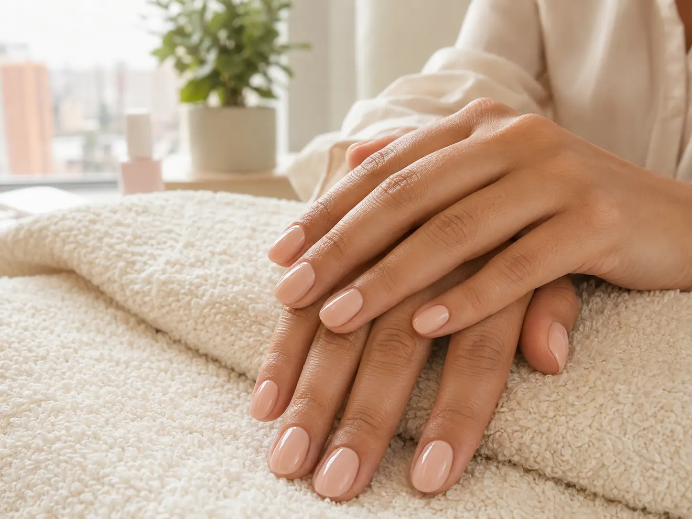

Hábitos sencillos después de tu cita
- Usa guantes para las tareas de limpieza. El contacto prolongado con agua y limpiadores puede desgastar el brillo y el borde.
- No uses las uñas como herramientas. Evita abrir latas, despegar etiquetas o raspar superficies con ellas.
- Hidrata cutículas y manos. Un aceite de cutícula y una crema ayudan a mantener flexible la piel alrededor de la uña.
- Protege el borde libre. Es la zona que más recibe golpes; evita limarla después de un semipermanente porque podés romper el sellado.
- Seca bien las manos. La humedad constante no favorece la piel ni el acabado.
- No arranques el esmalte. Al desprenderlo podés llevarte capas superficiales de la uña.
- Programa el retiro a tiempo. Un producto levantado necesita atención antes de engancharse o quebrarse.
Para esmalte tradicional: durante las primeras horas, trata de evitar golpes, agua muy caliente y presión sobre la superficie mientras termina de endurecer.
Qué llevar en la cartera
Una crema de manos pequeña y un aceite de cutícula tipo lápiz son suficientes para una rutina diaria rápida. Aplicar poca cantidad con frecuencia suele ser más práctico que esperar a sentir resequedad.
Si el esmalte se levanta
No tires del borde. Si es tradicional, podés retirarlo y reaplicar. Si es semipermanente, consulta para hacer un retiro controlado y revisar el estado de la uña.
¿Quieres reservar?
Consulta cobertura y disponibilidad para manicure a domicilio en Zona Sur.
Escribir por WhatsApp →